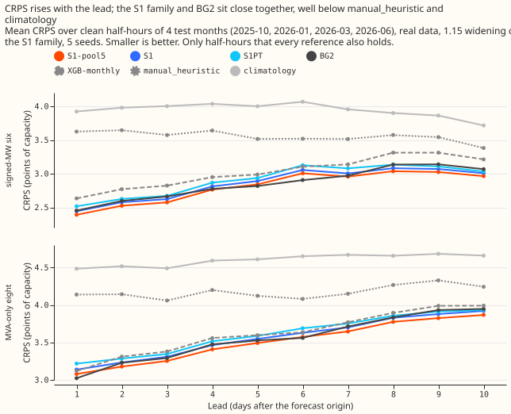
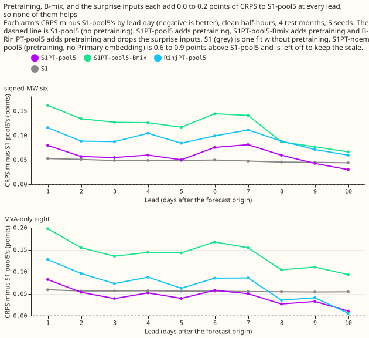
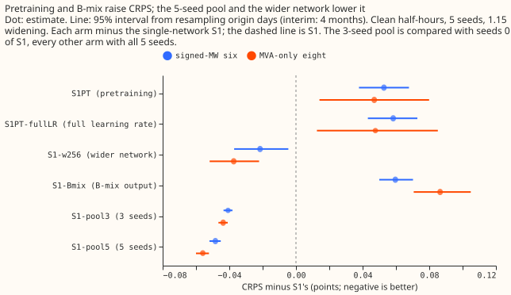
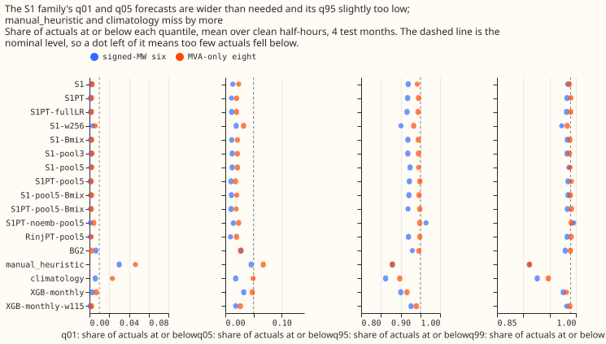
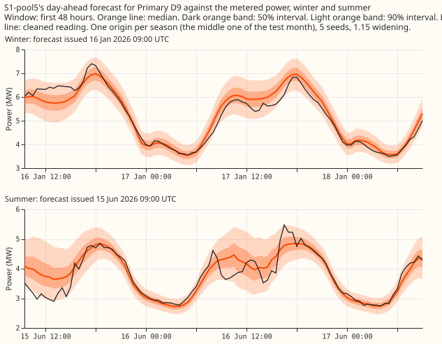
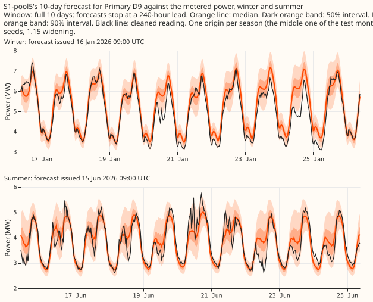
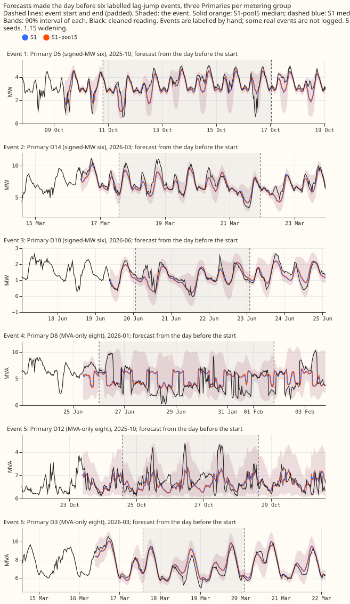

Does adding pretraining, the B-mix output, and a five-seed pool, one at a time and then together, lower the S1 network's CRPS, and does the whole beat its parts and the references?
Take-home message: averaging five random-seed fits of the S1 neural network lowered its error by about 0.05 points at both groups of Primary substations, and no other add-on helped. Pretraining with the recent-power inputs masked raised CRPS by 0.05 points. The fixed 50/50 B-mix raised it by 0.06 to 0.09. A wider hidden layer lowered clean-row CRPS at the six and the eight but raised it at D15 and D18 (+0.38 on clean rows) and on real events at the MVA-only eight (+0.32). The assembly of pretraining and the pool was worse than the pool alone (C4: +0.059 at the signed-MW six, +0.047 at the MVA-only eight). The pool's gain of 0.048 at the six is below the minimum detectable effect of 0.057. On four test months the five-seed average is level with BG2 (the best-guess stack of five demand models) and ahead of the monthly XGBoost recipe at the six and the eight. With a fifth month, BG2 is ahead at the six (2.856 against 2.949). The five-seed average is therefore not a release candidate. All numbers are interim.
Definitions
- S1: a mixture density neural network trained jointly on all Primary substations, with three lagged power readings and the surprise (observed minus forecast power) at each lag.
- R-inj: the same neural network without the surprise inputs, trained with injected lag faults. L0: the lagless neural network, which has no lagged power inputs. L0PT and S1PT are L0 and S1 after pretraining.
- Primary: a primary substation of NGED's distribution network. The experiment forecasts the demand at 16 of them. The Primary embedding is a learned vector per Primary that the neural network takes as an input.
- The six and the eight: shorthand for the signed-MW six and the MVA-only eight. The signed-MW six are the six Primaries metered in signed megawatts (D5, D9, D10, D11, D14, D16). The MVA-only eight are the eight metered in megavolt-amperes only. D15 and D18 (short-history Primaries) are reported separately.
- CRPS (continuous ranked probability score) scores a whole forecast distribution, and is lower when the forecast is both sharp and well placed. Here it is computed from the 11 forecast quantiles, from q01 to q99, and averaged over lead days 1 to 10 unless stated.
- Effective capacity: the capacity of a series, used to scale every error. A point is 1% of it, so CRPS is in points of effective capacity.
- Clean rows: half-hours with no logged lag jump (a step in the recent-power readings). Real event rows are half-hours inside an event that NGED's log confirms. Harm rows are half-hours whose own target lies outside any event but whose recent-power inputs include one: real harm rows use logged events, and injected harm rows use injected faults.
- 1.15 widening: each forecast's quantile spread multiplied by 1.15 about the median.
- Quantile coverage: the share of actual values at or below a forecast quantile. The nominal coverage of q05 is 0.05.
- Five-seed pool: the equal-weight average of the mixture distributions of five fits of one arm that differ in random seed. B-mix is the fixed 50/50 mixture of S1's distribution and that of the lagless neural network L0.
- Hidden layer width 256: S1 with 256 units in each hidden layer instead of the S1 recipe's width, and otherwise the S1 recipe.
- Leave-one-out: an arm that removes one component (the Primary embedding, the surprise inputs, pretraining, or B-mix) from the assembled neural network.
- 60-epoch cap: a fit stops after at most 60 training epochs. A fit that reaches the cap may be under-trained.
- Minimum detectable effect: the smallest contrast that the seed-to-seed spread of single S1 fits could separate from noise, 1.96 × √2 × (seed standard deviation) ÷ √5, computed per metering group.
- Cold nights: half-hours with the sun more than 5 degrees below the horizon and the ERA5 temperature at 3 degrees Celsius or below.
- Pre-registered advance rules: the rules in the plan (the
decision_rulefield above), fixed before any score was read, that decide whether a component enters the final test. P1 to P6 are the plan's six numbered predictions. - Table P: the recalibration table of experiment 435. For each metering group, lead band, and input-condition class, one factor per tail quantile multiplies that quantile's distance from the median.
- Experiment 425's
AandR: the pretrained and the unpretrained pooled neural networks of experiment 425. That network takes three origin lags, and its pretraining rows carry real lagged power. - F1 to F5: the page's names for the follow-up contrasts that the scripts and the score tables call D1 to D5. The page renames them because D5, D9, D14, D15, and D18 are series codes.
Figures

Figure 1. CRPS by lead day, on the clean half-hours that every reference also holds (204,529 at the six, 311,777 at the eight), four screen folds, 1.15 widening.

Figure 2. CRPS minus the unpretrained five-seed pool's (S1-pool5), by lead day, for the pretrained pool, the pretrained pool with B-mix, the pretrained pool without the surprise inputs, and one fit of S1.

Figure 3. Contrasts against S1 with 95% intervals, by metering group. The three-seed pool is compared with S1 seeds 0 to 2, and every other arm with all five seeds.

Figure 4. Coverage at q01, q05, q95, and q99, four screen folds, on the half-hours shared with the references. Single-seed arms use the seed-mean quantile forecast.

Figure 5. Day-ahead forecasts of the five-seed pool for series D9, winter and summer.

Figure 6. Ten-day forecasts of the five-seed pool for series D9. Stored forecasts end at 240 hours, so the page shows 10 days, not 14.

Figure 7. Six real events, three per metering group, with the event start and end marked.
Results
Contrasts
- The intervals below are uncorrected 95% paired-bootstrap intervals, and they understate fold-to-fold and seed uncertainty. The contrasts are on clean rows, in CRPS points, and a negative value is better. The minimum detectable effect is 0.057 at the six, 0.056 at the eight, and 0.76 at D15 and D18. The labels C1 to C5 follow the plan.
- Pretraining, B-mix, and the full learning rate raised CRPS at the six and the eight, and the five-seed pool and width 256 lowered it.
| Contrast | Signed-MW six | MVA-only eight | D15 and D18 |
|---|---|---|---|
| C1 pretrained S1 | +0.053 (0.038 to 0.068) | +0.047 (0.014 to 0.080) | +0.859 (0.665 to 1.047) |
| C1b pretrained S1, fine-tuned at the full learning rate (post hoc) | +0.058 (0.043 to 0.073) | +0.048 (0.013 to 0.085) | +0.902 (0.702 to 1.101) |
| C2 B-mix | +0.060 (0.050 to 0.070) | +0.087 (0.071 to 0.105) | +0.927 (0.726 to 1.135) |
| C3 five-seed pool | -0.048 (-0.052 to -0.045) | -0.056 (-0.060 to -0.052) | -0.213 (-0.228 to -0.199) |
| C3b three-seed pool, seed-matched (seeds 0 to 2 on both sides) | -0.041 (-0.043 to -0.038) | -0.044 (-0.047 to -0.041) | -0.189 (-0.204 to -0.176) |
| C4 pretrained five-seed pool minus five-seed pool | +0.059 (0.044 to 0.073) | +0.047 (0.015 to 0.079) | +0.843 (0.669 to 1.030) |
| C5 hidden width 256 | -0.022 (-0.037 to -0.005) | -0.037 (-0.052 to -0.022) | +0.375 (0.259 to 0.506) |
- The follow-up contrasts show that pretraining helps the lagless network and that the surprise inputs are worth about 0.1 points with or without pooling. These contrasts are post hoc, on the same rows, with the same intervals and minimum detectable effects as above.
| Contrast | Signed-MW six | MVA-only eight | D15 and D18 |
|---|---|---|---|
| F1 pretrained L0 minus L0 | -0.073 (-0.094 to -0.056) | -0.138 (-0.180 to -0.098) | +0.056 (-0.132 to 0.257) |
| F2 S1 minus R-inj | -0.100 (-0.113 to -0.088) | -0.088 (-0.098 to -0.078) | -0.567 (-0.714 to -0.438) |
| F3 S1 five-seed pool minus R-inj five-seed pool | -0.103 (-0.115 to -0.091) | -0.086 (-0.096 to -0.076) | -0.532 (-0.653 to -0.410) |
| F4 pretrained L0 five-seed pool minus L0 five-seed pool | -0.069 (-0.089 to -0.051) | -0.135 (-0.178 to -0.094) | -0.034 (-0.233 to 0.171) |
| F5 width-256 S1 five-seed pool minus S1 five-seed pool | -0.016 (-0.032 to 0.002) | -0.034 (-0.049 to -0.019) | +0.396 (0.272 to 0.531) |
- Removing the Primary embedding is the only large leave-one-out change. The leave-one-out arms are scored against the pretrained five-seed pool. Removing the Primary embedding raises CRPS by 0.649 (0.597 to 0.702) at the six and 0.741 (0.689 to 0.798) at the eight. Removing the surprise inputs raises it by 0.033 (0.026 to 0.040) and 0.027 (0.017 to 0.037). Removing B-mix lowers CRPS by 0.059 and 0.096, and removing pretraining lowers it by 0.059 and 0.047.
Pretraining
- Pretraining S1 with every recent-power input masked raises CRPS. C1 is above zero, so no interval lies below -0.03. Plan predictions P1 (pretraining helps) and P4 (the assembly beats the five-seed pool) failed. At the eight, C1 changes sign between folds (lower CRPS in 2 of 4 folds, higher in 2 of 4), and the within-fold interval hides that. At the six, 3 of 4 folds are higher and the fourth is lower by 0.002.
- The same pretraining helps the lagless network. F1 and F4 are negative at the six and eight: pretraining lowered the CRPS of L0 by 0.073 and 0.138. Experiment 425 found 0.050 and 0.124 for its network on its own rows. L0 has no lag inputs, so masking removes nothing from its pretraining rows. The leading suspect for the failure in S1 is therefore masking the lag inputs in pretraining and then switching them on in fine-tuning.
- Experiment 425 pretrained on real lagged power and gained. Its network takes three origin lags, and its pretraining rows carry real lagged power from 2019 onwards. Rescored on this experiment's clean rows, which match its own rows exactly, pretraining lowered CRPS by 0.044 at the six and 0.107 at the eight, against +0.053 and +0.047 here. Experiment 449 (pull request 107) tests real lagged power in the pretraining rows of S1. That test has not been run on this page.
Other components
- B-mix raised clean-row CRPS above the +0.03 cap at both groups, so it stays a named option. On real harm rows its q99 pinball loss is lower than S1's at the six (0.255 against 0.278) and higher at the eight (0.367 against 0.347), without intervals. At D15 and D18 it lowers real-event CRPS.
- The five-seed pool advances, and beats every single seed at both groups. C3 is below zero. At the six the pool scores 2.809 against 2.842 to 2.875 for single seeds, and at the eight 3.506 against 3.539 to 3.591. The pool beats each seed over the four folds pooled and beats the seed mean in every fold. Single seeds win some folds: in 4 of the 8 group-by-fold cells a seed scores lower than the pool, by up to 0.014. This supports the minimum-detectable-effect caveat below.
- The five-seed pool gains more than the three-seed pool, as expected if the gain comes from averaging away seed variance. Against the same S1 seeds 0 to 2, the three-seed pool gains 0.041 and 0.044 (C3b) and the five-seed pool gains 0.056 and 0.056. The C3 row compares the five-seed pool with all five S1 seeds and gains 0.048 and 0.056. The production cost of the pool is five fitted networks per refit and five forward passes per row. Of the 20 S1 fits of the screen, 12 stopped at the 60-epoch cap, so single S1 fits may be under-trained, and the pool's gain may partly make up for that.
- Width 256 fails rule (a) at the six and rule (b) at the eight, although it had the lowest clean CRPS of any arm. S1-w256-pool5 scored 2.7929 at the six and 3.4722 at the eight, below the pool's 2.809 and 3.506. Rule (a) asks for the clean gain to hold on the four screen folds at both groups. C5 held in 3 of 4 folds at the six and 4 of 4 at the eight, and the gain at each group is under the minimum detectable effect. Rule (b) caps real-event CRPS at +0.03 and q99 pinball loss at +0.02 against S1. At the eight, real-event CRPS is +0.323 (0.215 to 0.426), so rule (b) fails. At the six, real-event CRPS is -0.200, and the q99 pinball loss is 0.025 lower. At the eight the q99 pinball loss is unchanged (0.449). F5 gives the same picture inside the pool: the gain is -0.016 and -0.034, and D15 and D18 are +0.396 worse. Width 256 also lowers upper-tail coverage at the six (q95 0.901 and q99 0.973, against 0.920 and 0.984 for S1). The variant does not advance.
- The surprise inputs are worth 0.1 points in single unpretrained fits and 0.03 inside the
pretrained pool. F2 and F3 give 0.100 and 0.088 (single fits) and 0.103 and 0.086 (pools of five
seeds) at the six and eight, on rows and seeds shared with the leave-one-out arms. F3 equals F2,
so pooling does not shrink the worth of the surprise inputs. The leave-one-out values of 0.033 and
0.027 compare a pretrained network with the surprise inputs against a pretrained network without
them, and that pretrained network is itself 0.05 worse than S1. That the pretrained network causes
the smaller worth is a hypothesis, which this experiment did not test. The comparison in
experiments 428 and 439 (0.106 at the six) used seeds 3 to 5 only. Experiment 425's
R, which has no surprise inputs, scores level with S1 (below), so the surprise gain may only make up for a weakness in the R-inj base.
Against the references
- On the shared rows the five-seed pool is level with BG2 and ahead of the monthly XGBoost recipe at the six and the eight, and behind both at D15 and D18. The table covers days 1 to 10 on the 579,044 half-hours that every arm and reference shares. The monthly XGBoost recipe is unwidened.
| Slice | S1 | Five-seed pool | BG2 | XGBoost monthly | manual_heuristic |
climatology |
|---|---|---|---|---|---|---|
| Signed-MW six | 2.850 | 2.802 | 2.845 | 3.017 | 3.554 | 3.946 |
| MVA-only eight | 3.556 | 3.501 | 3.543 | 3.615 | 4.171 | 4.599 |
| D15 and D18 | 9.160 | 8.952 | 7.687 | 8.879 | 12.088 | 22.740 |
| Cold nights, six | 2.801 | 2.722 | 2.405 | 2.814 | 4.820 | 5.159 |
| Cold nights, eight | 2.917 | 2.821 | 2.848 | 3.015 | 4.450 | 4.799 |
The pool leads BG2 by 0.043 at the six and 0.042 at the eight. Both differences are under the minimum detectable effect and have no interval. BG2 is better on cold nights at the six and at D15 and D18. Pooled over all 16 Primaries, BG2 leads on four folds (3.746 against 3.844), because of D15 and D18.
- Experiment 425's pretrained network
Aties the S1 pool at the six and beats it by 0.069 at the eight. The table scores experiment 425's networks on this experiment's clean rows (254,725 half-hours at the six and 389,812 at the eight, four folds, 1.15 widening; the rescoring is stored outside this folder, see Caveats).
| Network | Signed-MW six | MVA-only eight |
|---|---|---|
Experiment 425 A (pretrained, mean of single seeds, no pool) |
2.809 | 3.437 |
Experiment 425 R (not pretrained) |
2.852 | 3.544 |
| S1 five-seed pool | 2.809 | 3.506 |
| S1 (one fit) | 2.857 | 3.562 |
Experiment 425's A has no pool and no surprise inputs. Its R is level with single S1.
Experiment 425's recipe gains 0.044 and 0.107 from pretraining on these rows (the table's rounded
entries differ from those by 0.001), where S1's masked-lag pretraining loses. The masked-lag
recipe is the leading suspect for the difference (see Pretraining), because the folds and the rows
are the same. Experiment 425's networks also lack surprise inputs, so a second difference exists.
- With the fifth month, BG2 leads at the six and the pool leads at the eight, but the lead at the eight is under the minimum detectable effect. With 2025-12 (S1, its pool, and the references on the same 713,323 rows), CRPS at the six is 3.038 for S1, 2.949 for the five-seed pool, 2.856 for BG2, and 3.046 for XGBoost monthly. At the eight it is 3.602, 3.523, 3.563, and 3.654. The pool leads BG2 at the eight by 0.040 (3.523 against 3.563), which is under the four-fold minimum detectable effect of 0.056, so the two are not separated.
-
BG2's lead on five folds comes from the fifth fold, 2025-12, where the S1 pool is worse than experiment 425's
Afrom 11 December onwards, and most so after 22 December. The figures are for the six, clean rows, 67,598 half-hours, by origin day, and come from a CPU rescoring stored outside this folder (see Caveats).-
On 1 to 10 December the pool and
Aare close (2.8 to 3.4 against 2.7 to 3.3). From 11 to 14 December the pool scores 3.1 to 3.3 against 2.4 to 2.8 forA, and from 15 to 21 December 3.3 to 3.8 against 2.1 to 2.6. -
For origin days 22 to 31 December the pool scores 4.10 and the five-seed average of
A's quantiles 2.55. By valid-time day, 22 to 31 December, the scores are 3.86 and 2.10. The whole-December scores are 3.50 for the pool and 2.65 to 2.83 for single seeds ofA. -
The result is seed-dependent. Single S1 seeds score 3.39 to 4.29 over all of 2025-12, and seeds 0 and 4 (4.29 and 4.08) are much worse than the other three (3.39 to 3.49).
-
-
On five folds BG2 scores lower than the pool on cold nights and at D15 and D18, and XGBoost monthly beats the pool on cold nights at the six. At the six, BG2 scores 2.568 on cold nights, the pool 3.237, and XGBoost monthly 3.045. At D15 and D18 the pool (8.548) ties XGBoost monthly (8.551), and BG2 scores 7.380. At the eight on cold nights the pool scores 3.108 and BG2 3.080.
- The pool lowers real-event CRPS at the six and the eight, and its q99 coverage on real events stays far below 0.99. Real-event CRPS is 7.049 against 7.142 for S1 at the eight and 5.569 against 5.689 at the six. The pool's q99 coverage at the six is 0.871 against 0.860 for S1, where the target is 0.99. NGED's logs may miss events, so clean rows may hold unlogged events and real-event rows undercount.
Tails and widening
- The pool's lower quantiles cover far too little, so the lower band is too wide. On four folds, clean rows, days 1 to 10, the pool has coverage 0.0015, 0.0128, 0.925, and 0.987 at q01, q05, q95, and q99 at the six, and 0.0024, 0.0222, 0.946, and 0.989 at the eight. The nominal levels are 0.01, 0.05, 0.95, and 0.99. S1 has 0.0018, 0.0140, 0.920, and 0.985 at the six. The 1.15 widening that was fitted for single S1 widens the lower band further.
- On five folds the upper quantiles come closer to nominal. The pool has q95 coverage 0.932 and q99 coverage 0.989 at the six, and 0.949 and 0.990 at the eight. S1 has 0.925 and 0.987 at the six.
- The pool's cold-night q99 pinball loss at the six is lower than BG2's and XGBoost monthly's. On the four folds it is 0.155 for the pool, 0.26 for BG2, and 0.39 for XGBoost monthly. On five folds it is 0.161 for the pool and 0.242 for BG2.
- Figure 4 differs from these coverages in the third decimal. The figures in this section are averages over all clean rows (254,725 at the six, 389,812 at the eight), and for single-seed S1 they average the five seeds' coverages. Figure 4 uses the half-hours shared with the references (204,529 and 311,777) and the seed-mean quantile forecast for single-seed arms.
- A widening factor of 1.10 at the six and 1.05 at the eight scores best for the pool, within 0.014 of the 1.15 score. The sweep covers clean rows on four folds, and the raw forecast is factor 1.00.
| Group and arm | Factor | CRPS | q01 | q05 | q95 | q99 |
|---|---|---|---|---|---|---|
| Six, S1 pool | 1.00 | 2.813 | 0.0042 | 0.0238 | 0.890 | 0.971 |
| Six, S1 pool | 1.10 | 2.806 | 0.0022 | 0.0158 | 0.915 | 0.983 |
| Six, S1 pool | 1.15 | 2.809 | 0.0015 | 0.0128 | 0.925 | 0.987 |
| Eight, S1 pool | 1.00 | 3.493 | 0.0069 | 0.0411 | 0.920 | 0.979 |
| Eight, S1 pool | 1.05 | 3.492 | 0.0048 | 0.0339 | 0.929 | 0.983 |
| Eight, S1 pool | 1.15 | 3.506 | 0.0024 | 0.0222 | 0.946 | 0.989 |
| Six, S1 | 1.00 | 2.871 | 0.0049 | 0.0253 | 0.885 | 0.967 |
| Six, S1 | 1.15 | 2.857 | 0.0018 | 0.0140 | 0.920 | 0.985 |
| Eight, S1 | 1.00 | 3.560 | 0.0078 | 0.0438 | 0.916 | 0.976 |
| Eight, S1 | 1.15 | 3.562 | 0.0028 | 0.0244 | 0.943 | 0.988 |
The 1.15 widening was fitted for single S1, and the pool already widens the mixture. The 1.15 factor lifts the upper tail towards 0.95 and pushes the lower tail further from its nominal level. The pool's lowest CRPS is 2.806 at a factor of 1.10 at the six and 3.492 at 1.05 at the eight. - The mean forecast sits above the median forecast. The stored column is the median minus the mean forecast, which is negative where the mean sits above the median. For S1 it is -0.28 points at the six, -0.41 at the eight, and -1.79 at D15 and D18. Per Primary the S1 gap runs from -3.19 to +0.02 points. These checks use raw quantiles, clean rows with a finite actual, days 1 to 10, seeds 0 to 4, and four folds. - The 11-quantile approximation of the mean forecast is accurate to 0.005 points on average. It was validated once against the exact mixture mean of S1 seed 0 on one month: approximate minus exact mean -0.001 points, mean absolute 0.005, 99th percentile 0.032. - The mean forecast has about the same absolute error as the median forecast. Its bias (forecast minus actual) is -1.74, -0.74, and -8.02 points at the six, the eight, and D15 and D18. Its mean absolute error is 5.06, 6.36, and 15.57, against 5.08, 6.32, and 16.10 for the median. - The pool's mean-forecast bias and mean absolute error are within 0.001 of S1's at the six and eight, and its median-minus-mean gap is slightly larger. The gap is -0.286 against -0.277 at the six and -0.423 against -0.406 at the eight. - Pretrained S1 and B-mix have larger mean-forecast errors than S1 at all three groups, and pretraining lowers the mean-forecast error of the lagless network. This agrees with the CRPS contrasts. For L0PT against L0 the mean absolute error is 5.29 against 5.42 at the six and 6.65 against 6.94 at the eight.
Table P recalibration
- Experiment 435's Table P leaves the S1 pool below the 0.93 floor at q95 on clean rows. Applied to the raw pool forecast, Table P gives clean-row q95 coverage of 0.914 at the six and 0.924 at the eight. Experiment 435's own R-inj forecasts give 0.904 and 0.919 against the 0.93 floor (experiment 435). Both are still below the floor.
- Table P scores worse than the 1.15 widening at the six and at D15 and D18, and better at the eight. On the same rows the widened pool has q95 coverage 0.910 at the six and 0.940 at the eight, and CRPS 2.986 and 3.668 against 3.004 and 3.655 under Table P. At D15 and D18 Table P scores 9.053 against 8.968 widened. Cold nights at the six stay poor: q95 coverage is 0.817 under Table P, against 0.861 widened and 0.811 raw.
- The Table P comparison is approximate, because the factors were fitted on a different neural
network and cover three months. The factors are the ones in experiment 435's
table_p_factors_full_428.parquet, fitted on R-inj, not on S1. Demand quantiles are not clipped. Only the months 2026-01, 2026-03, and 2026-06 are scored, because Table P for a month needs the earlier folds. Rows are the world-0 clean rows, and the scope is experiment 435'scleancondition class. The pool is the S1 pool, not experiment 425'sA, whose forecast schema differs. Experiment 435's cold-night class is not applied.
Avoidable-curtailment cost
- The pool's avoidable-curtailment cost is lower than BG2's at export limits of 0.5 and 0.75 of the reference value and higher at 0.9, and one series, D14, dominates the totals. The cost is the cost of curtailing more than needed, for the signed-MW six at a lead of 12 to 36 hours, four folds, shared clean half-hours, with the seed-mean forecast for the S1 arms. At 0.5 and 0.75 the pool costs £18.0M and £5.82M against £19.3M and £6.40M for BG2. At 0.9, BG2 is lower (£1.28M against £1.76M). D14 carries £1.58M of the pool's £1.76M at 0.9 and £3.29M of its £5.82M at 0.75.
Design
- Arms. S1; the pretrained S1; the pretrained S1 fine-tuned at the full learning rate; S1 with B-mix; the three-seed and five-seed pools; the pretrained five-seed pool, with and without B-mix; the leave-one-out arms without the embedding and without the surprise inputs; S1 with hidden width 256; and, for the follow-up contrasts, L0, L0PT, R-inj, and their five-seed pools. S1 seeds 0 to 2 (experiment 428) and seeds 3 and 4 (experiment 439) were already stored.
- Fits. 141 new fits, counted from the model folders: 20 pretrained S1, 20 full-learning-rate, 40 leave-one-out, 16 lagless, 20 width-256, 20 pretrained lagless, and 5 S1 fits at the fifth fold. These follow 80 pretraining runs (20 each for S1PT, L0PT, RinjPT, and the arm without the embedding). Each fit took about a minute.
- Pretraining. ERA5 and CAMS rows (reanalysis estimates of past weather) from experiment 418 pass through the input scaling fitted on the fold's training data. The ensemble-spread inputs are set to the median spread at each lead-time band, since past-weather estimates have no ensemble. Every recent-power input is masked (lag values 0, missing flags 1, surprise 0). Fine-tuning then switches the lags on, so the network meets live lag values for the first time there.
- Pooling. The pool averages the members' cumulative distribution functions on the capacity scale. Single-seed arms report tails from the seed-mean quantile forecast, as in experiment 428, so their tail coverage is not strictly comparable with the pool's.
- Reused code. Experiments 428, 439, 425, 418, 404, and 446, imported and not edited.
- Cadence and cleaning. Monthly refits; cleaned data; D15 and D18 cut at 2025-03-01.
- Not run. The planned final test (5 folds by 3 seeds, 72 fits) was not run, because no component advanced except the pool, and the pool was scored on the fifth fold from 5 S1 fits. The export gate is not a ladder arm, because it is scored on signed output (see experiments 420 and 424). Table P is a post hoc stage that ran after the screen, and the main tables hold raw and 1.15-widened scores.
- Reference rows. The reference forecasts of experiment 87 cover only 25 of 31 forecast origins per month. The reference comparison therefore loses about 20% of the S1 rows. All other tables use every row.
Caveats
- Four screen folds plus a fifth fold for S1 and its pool; every number is interim with no 99% claim. The pool's gain at the six (0.048) is under the minimum detectable effect of 0.057, which comes from seed-to-seed spread in single-seed contrasts, and its gain at the eight (0.056) equals the minimum detectable effect of 0.056. The pool beats each of its five single seeds over the four folds pooled and beats the seed mean in every fold, and the paired interval excludes zero. Single seeds win some folds (see Other components), and the intervals are not Bonferroni-corrected.
- In 2026-01, D5 has no clean rows and D16 has 10, so the signed-MW six holds effectively four series that month.
- The 14-day horizon is not available; stored forecasts end at 240 hours.
- Pretraining with masked lags is one design (see Pretraining). S1 pretraining was not run for the fifth fold.
- Some numbers come from an audit's CPU rescoring and log reading that this experiment's folder does not store: the December figures, experiment 425's rescored scores, the range of single-seed scores (2.842 to 2.875 at the six and 3.539 to 3.591 at the eight), and the count of fits that stopped at the epoch cap.
What to try next
- Treat the five-seed pool of S1 as a candidate default in the next demand experiments; the roadmap owns the decision. Look at why BG2 is better on cold nights at the signed-MW six and in the fifth fold.
- Read experiment 449 (pretraining S1 with real lagged power) before any further pretraining
decision, and compare a five-seed pool of experiment 425's
Awith the S1 pool on the same rows.
Checks
- Audit triggers. Trigger 2 (the result contradicts its predictions and earlier experiments) fired: P1, P2, P4, and the surprise-input range failed, and experiments 425 (pretraining helped) and 428 and 439 (surprise inputs worth 0.106) point the other way. F1 to F4 explain part of the contradiction. Trigger 3 is cleared: the median minus mean forecast per Primary and the mean-forecast error are computed above. Trigger 4 (leave one site out) was not run. Trigger 7 may apply, because the pool is a candidate default and is not replicated.
- Reviews. The plan review, code review, numbers review, and prose review ran; their findings are in the pull request. An independent audit checked the arithmetic against the stored scores and rescored experiment 425's networks on this experiment's rows.